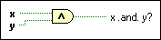

And Function
Owning Palette: Boolean Functions
Requires: Base Development System
Computes the logical AND of the inputs. Both inputs must be Boolean values, numeric values, or error clusters. If both inputs are TRUE, the function returns TRUE. Otherwise, it returns FALSE.
 | Note This function performs bitwise operations on numeric inputs. |
The connector pane displays the default data types for this polymorphic function.

 Add to the block diagram Add to the block diagram |
 Find on the palette Find on the palette |